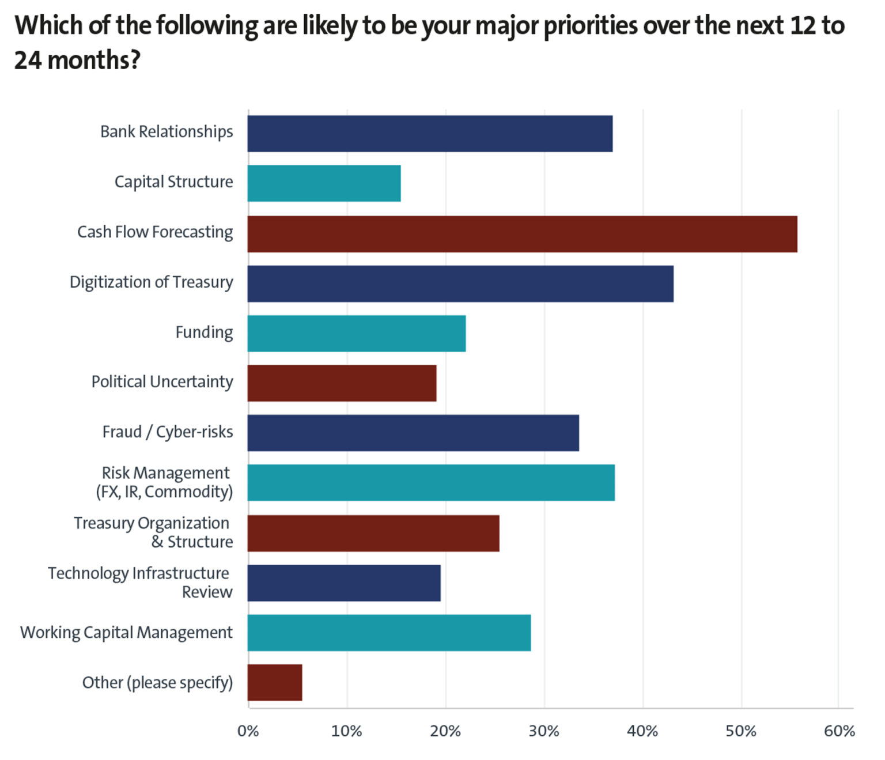
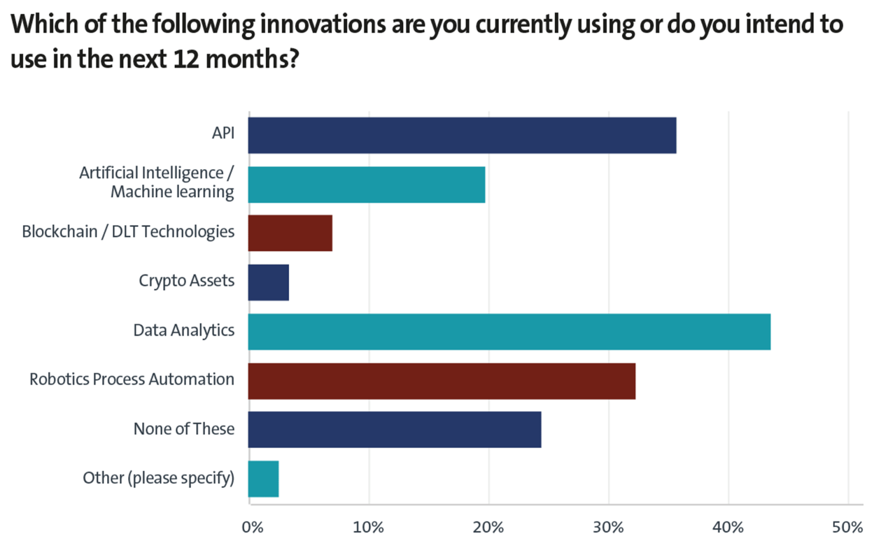
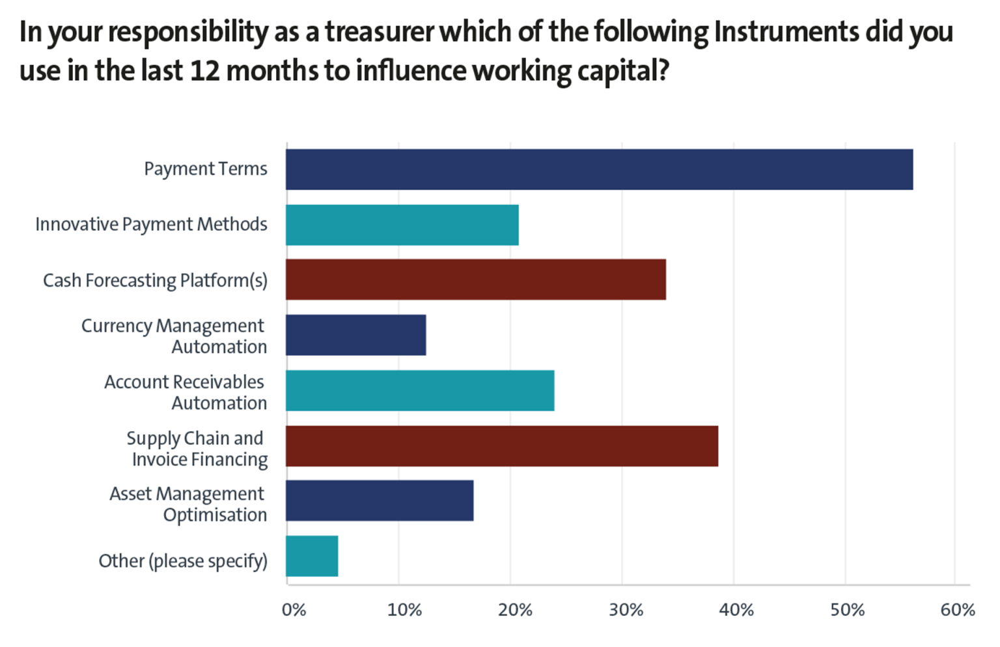
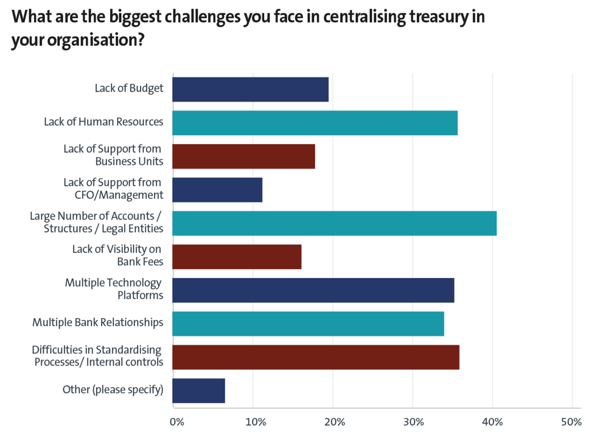
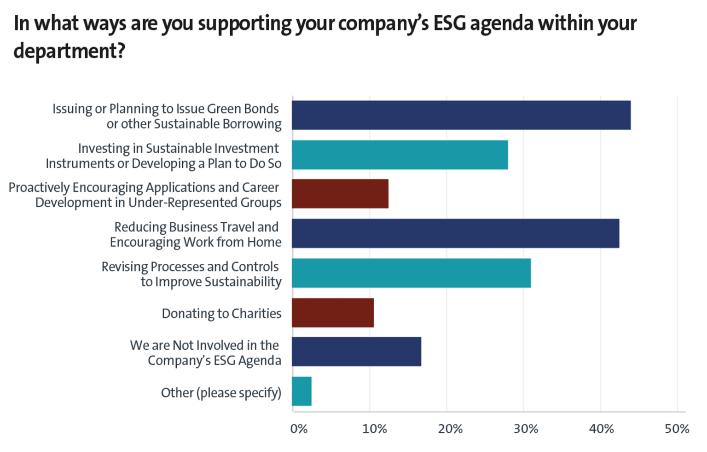

According to this year’s responses to the EACT’s annual pan-European survey, the pandemic has not changed the top priorities of corporate treasurers. Instead, it has crystallised the need for increased digitisation.
The European Association of Corporate Treasurers’ (EACT’s) annual survey reveals the top priorities for treasurers during the year ahead, identifies critical challenges facing the function, and unveils the favoured technological innovations corporates intend to implement.
The EACT Annual Survey 2022 is the Association’s first in a post-Covid-19 world and, as such, reveals whether or not the pandemic has permanently changed treasury priorities. This year’s study was completed by 302 group treasurers from multinational companies across Europe.
The survey began by collating the most significant priorities for treasurers over the next 12 to 24 months. The familiar issue of cash flow forecasting was the critical priority for more than half of the respondents (56%), followed by the digitisation of the treasury function (43%), with both bank relationships (37%) and risk management (37%) emerging as the joint-third most essential priorities. Fraud and cyber risks (34%), working capital management optimisation (29%), treasury organisation and structure (26%), and funding (22%) are also on the radar of many treasurers.

François Masquelier, Chair, EACT, comments: “It is not surprising that cash flow forecasting has come out on top, when the Covid crisis has been challenging treasurers for the past two years. Now this has been followed by a war in Ukraine, which has had unexpected impacts on supply chains and the costs of commodities. The uncertainties surrounding the economy explain the difficulty in producing reliable and accurate forecasts. In addition, the C-suite has repeatedly called for stress scenarios and sensitivity analyses to predict the most diverse situations, which now includes wars.”
With the digitisation of the treasury function, itself part of the modernisation of the finance function, ranking second, the top two priorities remain the same as last year. The need to digitise and further automate is a logical step towards improving the resilience and efficiency of financial management.
Finally, in this top tier, bank relationship management and risk management are clear priority areas. The vote for bank relationships could be explained by the importance of onboarding and resilience of solid bank relationships for financing and supply chain management, which has been strained in some sectors throughout the pandemic. The same is true in some areas of risk management.
“The fact that market risks, including currency and commodity risks, are a top priority can be explained by the very high level of volatility in the markets that exists today,” remarks Masquelier. “Yet, despite the health crisis and the war in Eastern Europe, treasury priorities on the Continent have remained relatively identical, even if the ranking order is somewhat different. I’m amazed that funding came only eighth on this list of priorities. After the Covid crisis, many businesses were under pressure and faced liquidity problems. We could have expected this issue to rank higher.”
In terms of the technological innovations that are priorities for treasurers, data analytics (44%) emerged as the most valuable consideration. This was followed by APIs (36%), RPA (32%), of which AI/ML (20%) only ranked as the fifth technological priority. Once again, there were no significant changes in the top three compared with 2021, which are the same but in a different order.

“We all understand that the C-suite wants treasury to use the vast quantities of financial data we sit on and develop more reporting and dashboards,” notes Masquelier. “We’ve seen how banks and corporates can use APIs, while RPA is an intermediary step to automation, which explains its high ranking. However, one in every four treasurers doesn’t plan to use any of these technologies listed. They may have other priorities – perhaps fixing current systems around a TMS or reviewing current IT architecture before using other new technologies.”
Contrary to the recent excitement for Bitcoin and announcements around central bank digital currencies (CBDCs), cryptocurrencies were a priority for just 3% of treasurers. This is perhaps unsurprising, given the fact that they are considered by most to be a new asset class rather than a new currency.
“The answers show a certain lucidity on the part of treasurers who seem realistic in their use of new technologies,” adds Masquelier.
The EACT survey also saw access to real-time information (46%) emerge as the most significant interest that treasurers will have over the next few years. This was followed by real-time payments and collections (39%), and real-time liquidity (38%).
.png)
“These results can be explained by the current crisis and the need for immediate collection to limit funding needs or, sometimes, to simply survive,” Masquelier reveals. “Having that immediacy, the ability to operate in real time, has become crucial for certain industries and B2C organisations.”
Automated FX risk management remains a consistent interest for treasurers, coming in as the fourth-highest interest (30%) for the second year running. The fact that there are still many highly manual processes around FX and commodity management is pushing the case for further automation – for enhanced efficiency and internal control reasons. Fintechs then come in fifth on the list (28%).
“Fintechs can offer plenty of hope and guidance to treasurers regarding changing their ways of working through APIs and on-demand processing, for example,” explains Masquelier. “This ties back into the main interests of this survey – the concept of on-demand treasury has become a ‘must’. Treasurers realise that they are sitting on a huge quantity of financial data that needs to be used, crunched, consolidated, and analysed to enable better management decisions and be more proactive and faster in reacting to crises or problems.”
Corporate treasurers play an essential role in optimising their organisation’s working capital. They could be directly responsible for this, partly responsible, or be part of a secondary team that helps to influence the success of an optimisation project. Working capital enhancement projects are always complex, as they invariably include many different departments besides the treasury function.
This year’s EACT survey found the instruments that treasurers had most commonly used in the past 12 months were payment terms (56%), supply chain and invoice financing (39%), cash flow forecasting solutions or platforms (34%), AR automation (24%) and innovative and new e-payment methods (21%).

“Working capital optimisation is a clear post-Covid priority,” continues Masquelier. “To be successful, this requires a solid sponsorship from the CFO, clearly identified project managers, and commitment from all stakeholders. Events such as the pandemic and, more recently, the war in Ukraine have crystallised the resolve of treasurers to support any initiative to enhance and optimise working capital with the best funding tools at their disposal.”
This year’s EACT survey also explored the challenges with which treasurers grapple. The two biggest challenges faced when centralising the treasury function are a large number of bank accounts, complex group structures and number of legal entities (41%), and difficulties in standardising processes and internal controls (36%). These are closely followed by a lack of human resources (36%), multiple technology platforms (35%) and multiple bank relationships (34%).

“Standardisation remains a preliminary and necessary step to automation, improving the organisation of the treasury department and increasing efficiency through initiatives such as automatic reconciliation, straight-through processing, and the use of mass data,” comments Masquelier. “Then, with the specificity and multitude of IT tech platforms available today, treasurers are finding they must juggle an increasing number of solutions, which complicates management.”
Interestingly, some of the lowest scoring answers to this question demonstrate the treasury function’s progress over the past decade. Only 11% of respondents cited a lack of support from the CFO or senior management as a big challenge, highlighting the strategic nature of the treasurer. Another complaint that is seemingly on the way out is a lack of visibility over bank fees, which is a challenge for only 16% of respondents.
An area of growing importance for the treasury department is how it is positioned to support its organisation’s ESG goals. The survey found that 44% of treasurers support their company’s ESG agenda by issuing or preparing to issue green bonds or similar sustainable borrowing. Another popular practice to support ESG is to reduce business travel and encourage working from home (43%).

“We have seen a significant increase in green financing across Europe,” outlines Masquelier. “In addition, the forced reduction of travel and homeworking during Covid and the various lockdown periods across Europe certainly helped treasurers to contribute to ESG goals in another way.”
Treasurers can also support ESG goals through the review of processes and controls to improve sustainability (31%) and using sustainable investment instruments or developing a plan to do so (28%).
“More than a quarter of treasurers have the objective of contributing to ESG using greener and more socially responsible MMFs,” continues Masquelier. “It seems that the ESG theme is gaining importance but has not yet reached its full development and maturity. Treasurers seem to underestimate the possible imprint they may have on this theme, and we still have the 17% of treasury professionals who are not involved at all in the ESG agenda. This is declining over time – it was 25% last year – but nevertheless, this percentage remains high.”
The results of the 2022 EACT survey appear to have been reinforced by the continuing pandemic, which has underlined the need for centralisation and automation. The war in Ukraine, which began after the survey was held, has also had an impact. The quest for further digitisation and the hope offered by new technologies and innovations underline the importance of combating the increasing risk of fraud and the desire to strengthen internal controls.
“The pandemic and the recent geopolitical crisis have crystallised the need for treasurers to digitise and accelerate any ongoing transformations,” reflects Masquelier. “The maturity of technological solutions makes it more possible than ever to place greater hope in improved cash management.”
The challenge now facing treasurers comes not so much from these internal changes but from managing the continuum of external developments, on the economic, financial, and regulatory sides.
“It is clear from this survey that there is still a long way to go to reach a degree of mastery of new technologies, real-time operations management, and reduction of inherent treasury risks,” concludes Masquelier. “Despite the significant shift noticed during this pandemic to digitise and automate treasury processes wherever possible, the survey demonstrates the need to take treasury to the next level.”
By Ben Poole, Editorial Team, Treasury Management International (TMI)
Featuring François Masquelier, Chair, EACT
This article was originally published by Treasury Management International (TMI) and is republished from this webpage with their permission: https://treasury-management.com/articles/mercury-rising-taking-the-temperature-of-european-corporate-treasurers/
.png "The LEI: Unlocking the Benefits of a Secure Payments Ecosystem for Corporate Treasurers")
The EACT has been advocating for a digital identity for Corporates for many years now. We believe that, Corporates, like individuals, must have a single identity which help them to identify itself and identify third parties as well in this digital era.
Read.png "LkSG Relevant for Treasury on a Case-by-case Basis")
The Supply Chain Due Diligence Act (LkSG) creates the legal framework to improve the protection of the environment and human rights along German supply chains. GACT spoke to Dr. Julia Sitter (White & Case LLP) about the relevance and need for action by treasury departments.
Read.png "CMU, The Come-Back!")
The Capital Market Union, which was one of the main objectives of the Vander Leyen Commission, is back in the limelight, and is likely to become a priority for the next Commission next summer.
Read.png "What Will be the Corporate Treasurer's Priorities for 2024?")
General insights into the common priorities of corporate treasurers that will still be relevant in 2024.
Read.png "Counterparty Risk Assessment by Treasurers")
François Masquelier lists some comprehensive steps to best assess counterparty risks.
Read